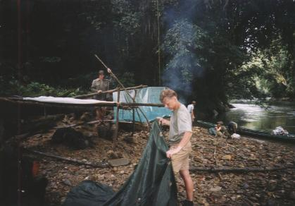
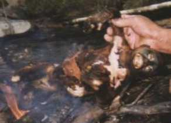

Nadat we rond 5:30 uur opstonden, werden we al snel naar de keuken geleid, waar we voor het eerst sinds ongeveer 3 weken weer eens brood aten. Ondanks dat dit zelfgemaakte brood heel anders smaakt dan in Nederland, was het heerlijk!!! We zouden vandaag rond 9:00 uur vertrekken met een longboat (smalle houten boot) richting de echte jungle. We hadden gelukkig nog tijd genoeg om wat extra voedsel in te slaan. Naast het voedsel dat we al in de stad Putussibau hadden ingeslagen, kochten we nog als extra:
Het begin: onderweg |
Om 9:00 uur begonnen we stroomopwaarts te varen met Ebok en Jelayan. Met Ebok hadden we gisteren de afspraak gemaakt. Jelayan was veel ouder en had een prachtige kop, alsof hij zo uit de rimboe kwam. Na zo'n 10 minuten varen werd er nog een derde persoon opgepikt. Inclusief onze grote backpacks was de boot aardig vol. De buitenboordmotor (Yamaha) liep uitstekend en had een vermogen van 15 pk. Ondanks de stroming realiseerden we een aardige snelheid, waarschijnlijk tussen de 15 en 25 km/uur. Het was echter vrij fris en het begon al snel te regenen. Maar ja, wat wil je als je op weg bent naar het tropisch regenwoud? We waren op weg naar het primaire oerwoud: regenwoud dat nog nooit gekapt is en waar geen mensen wonen! Eén van onze doelen zou gerealiseerd worden.
Nog steeds het begin... |
De uitzichten waren geweldig en het werd steeds mooier naarmate we verder kwamen. De oevers werden erg steil, zodat we echt tussen de bergen voeren. Dat was ook het punt waar het primaire oerwoud begon, want hier kunnen geen bulldozers komen; het is te steil. Ebok bestuurde achterin de boot de motor, terwijl Jelayan geconcentreerd in het water keek of er vlak onder de waterspiegel rotsen waren. Zodra een rots de schroef van de motor dreigde te raken, werd Ebok gewaarschuwd, zodat hij de motor vliegensvlug boven de waterspiegel haalde. Een gebroken schroef zou betekenen, dat Ebok in één keer verlies zou lijden met deze trip in plaats van winst. Dit risico lag bij hem.
Opeens beveelde Jelayan te stoppen. Hij keek geconcentreerd naar boven. Even later zag ook ik waar hij naar keek. Het was moeilijk te zien, maar enkele apen keken ons nieuwsgierig aan vanuit een heel hoge boom. Richard zei nog dat hij het leuk vond dat ze speciaal voor ons even stopten om aapjes te laten zien. Jelayan pakte echter zijn oude geweer en richtte het naar één van de aapjes. De aap verplaatste zich. Jelayan wist blijkbaar wat hij deed, want hij richtte opnieuw, terwijl hij in het schommelende bootje stond. Toen kwam de knal... Na de knal hoorde ik niets. Mis? Raak? Ebok voer het bootje naar de oever en Jelayan liep vervolgens een stukje het oerwoud in... op z'n blote voeten! De aap, waarmee hij terug kwam hield hij vast aan de staart en werd zo de longboat in gegooid. Het beest lag vlak bij mij en ik zag hoe zijn longen nog steeds ritmisch bewogen. Hier gebeurde dit.
Kiezelstrandjes zijn er alleen bij laag water: ideaal om even te pauzeren |
Om de paar uur werd er even gestopt, zodat er gepist, gerookt of gegeten kon worden. De drie jagers bleken qua eten alleen maar een grote pan met rijst mee te hebben. De jungle werd steeds echter: bomen werden ontzettend groot, met zeer veel parasieten en lianen erop, eraan of eromheen. Werkelijk alles was in elkaar verstrengeld! De bomen aan de oever maakten een steeds kleinere hoek met de rivier. Al deze bomen verdrongen zich voor het laatste beetje open lucht (=licht) en wilden daar klaarblijkelijk een rechtopstaand leven voor opofferen. Apen konden zo via de bomen van de ene naar de andere kant van de rivier komen, terwijl de rivier toch zo'n 40 à 50 meter breed was. Enkele bomen groeiden zelfs bijna horizontaal. Deze bomen hadden aan de achterkant van de stam enorme wortels die enkele meters boven de grond met de stam verbonden waren om zodoende de gigantische zwaartekracht te kunnen opvangen. Er waren hele dunne en hele dikke lianen. De hele dikke lianen leken soms gewoon bomen, totdat ik zag dat ze vlak boven de grond ophielden en dus bleken te hangen. De dikke lianen waren bedekt met allerlei vegetaties, zoals mos en kleinere lianen krulden eromheen. Boven de rivier hingen vooral veel dunne lianen; sommigen met het uiteinde in de rivier badend, anderen net erboven hangend. Ook hingen ze vaak als een parabool, omdat beide uiteinden van de liaan in dat geval in een boom vast zaten. Regelmatig werden we door deze lianen geraakt en alleen bij de dikkere moesten we opletten, omdat je hieraan niet je hoofd wilt stoten tijdens het varen.
|  |
Actief bezig met het opzetten van de tent. Hierbij gebruiken we een parang, een zaag, stammetjes uit de natuur en veel touw. |
Iets na 15:00 uur waren we bij ons kamp (zie kaart), een soort kiezelstrand waarop je kon lopen vanwege het relatief lage water. Bij hoog water is het uiterst moeilijk om een geschikte plek te vinden voor een kamp, omdat alles te steil is; het kiezelstrand is dan immers de bodem van de rivier. Het begon weer te regenen en we zetten alvast een zeil op. De jagers bleken ook een zeiltje mee te hebben. Dat was trouwens het enige dat ze voor de nacht hadden. Vlak daarna begonnen we actief met het opzetten van onze tent. Gelukkig hoefden we niet veel hout te zagen, want er lagen allerlei door de rivier meegevoerde stammetjes op het kiezelstrand. De mannen keken eerst erg vreemd op toen ze onze tentcontructie zagen, maar hielpen wel fanatiek mee. Met de tent waren we zo'n 2 uur bezig, zodat we vlak voor het donker klaar waren.
Het aapje wordt geroosterd... |
|  |
Het aapje van dichtbij. |
|
Het wilde zwijn vlak na aankomt. |
Iets later... |
Rond 19:00 uur kwamen de jagers terug met hun prooi: een wild zwijn! Het lag in de boot met z'n voor- en achterpoten aan elkaar gebonden. Met behulp van een lange stok tussen de poten door, werd het beest door de twee jagers uit de boot getild en op het kiezelstrand gelegd, half in het ondiepe stromende water. Eén van de mannen scheen met een zaklamp, terwijl de ander zijn parang en zijn handen gebruikte om het hele zwijn te ontleden. Ze begonnen het zwijn vanaf de anus via de buik naar boven open te ritsen. Wat verder in het proces werd met flinke slagen het borstbeen en het heupbeen doorgehakt. Ik stond iets te dichtbij, want ik voelde de bloedspatten op mijn kleding, mijn pet en mijn hand komen. Op een bepaald moment werd ik er zelfs misselijk van. Steven en ik riepen Richard erbij. Hij kwam pas kijken toen we hem duidelijk maakten dat hier toch wel echt iets heel aparts aan de gang was. Ze hadden een emmer naast het zwijn gezet om daar alle organen en al het andere vlees in te doen. Ook de darmen werden keurig bewaard; ze werden leeggeperst en de inhoud stroomde mee met de rivier. Het beest werd ook onthoofd, maar ik heb niet meer kunnen zien wat ze daarvan bewaard hebben. Rond 20:00 uur gingen we namelijk onze tent in om te slapen, terwijl Ebok, Jelayan en hun vriend nog actief doorwerkten. Klik hier voor de plek van de slachting.
Omdat wij ongeveer 1,5 meter boven de grond sliepen, hadden we 's nachts geen last van het stijgende water. Ebok, Jelayan en hun vriend moesten zich die nacht naar de steile oever verplaatsen, omdat het hele kiezelstrandje onder water kwam te liggen. De mannen hebben 's nachts het aapje opgegeten en hebben vrijwel niet geslapen, terwijl wij ondanks de vele buien prima geslapen hebben. Allemaal dankzij onze uitgekiende TENTCONSTRUCTIE.
Naar de volgende dag | Index